sector30 supernovae (25 total)
Each figure has three panels. The top panel shows the transient light curve, the middle panel shows the local background (estimated in an annulus), and the bottom panel shows a "background-model corrected" light curve. Details about the background model are in the README.
The vertical red line marks the time of discovery reported to TNS. Other useful metadata from TNS is in the figure title.
Note that the top and bottom panel are in magnitudes, while the middle panel is in differential flux units. The magnitudes are calibrated to the flux in the reference image used for image subtraction. Thus, flux from the host galaxy is included in these magnitudes.
3-sigma upper limits are plotted as triangles with no errorbars. A typical limiting magnitude is 19.6 in 30 minutes or 18.4 in 200 seconds (for low backgrounds).
The links allow you to download the light curve data as a text file.
More details in the README.
2020tzb
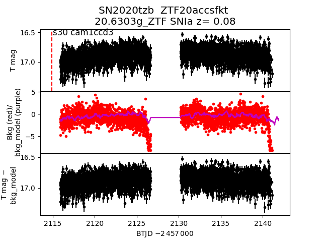
2020xpi
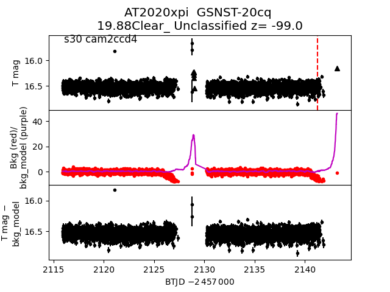
2020vbs
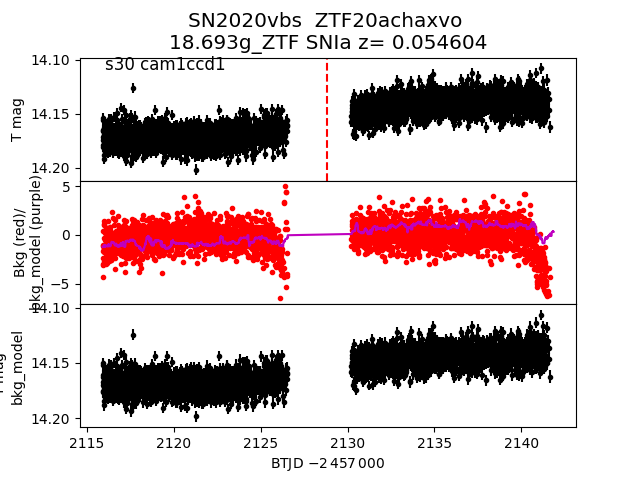
2020uve
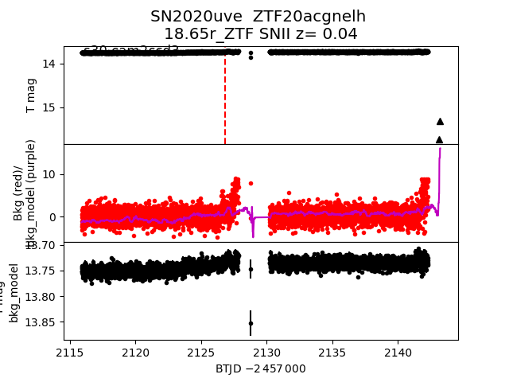
2020wap
 2020xoc
2020xoc
 2020vfa
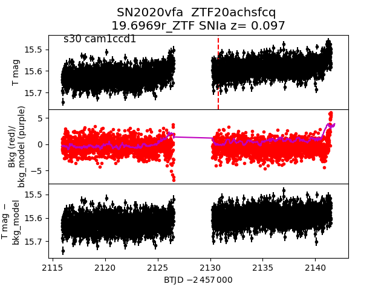
2020uwl
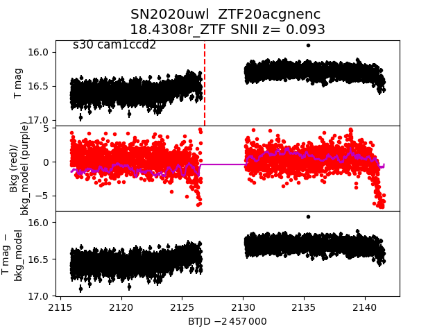
2020vcp
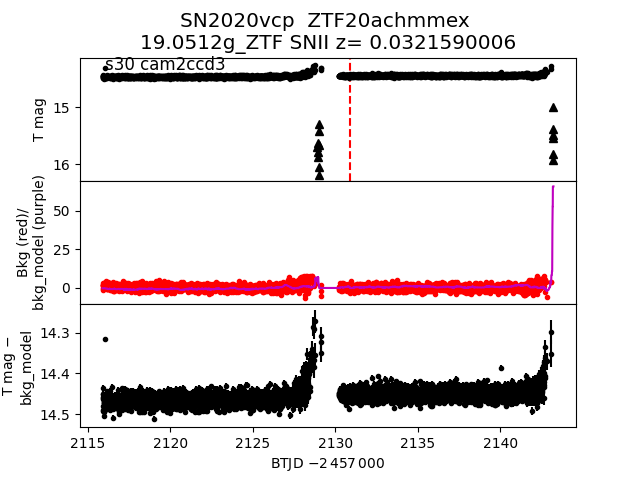
2020wpq
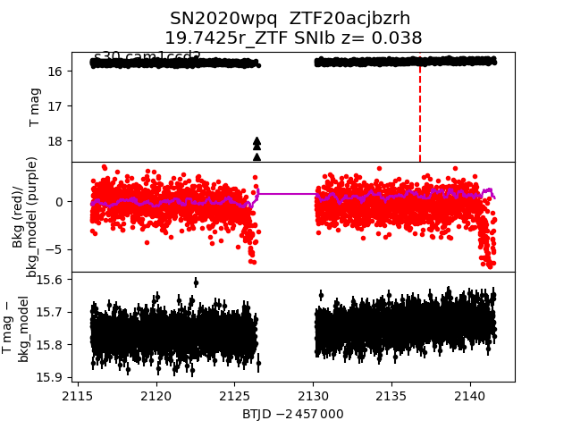
2020ypm
2020vfa
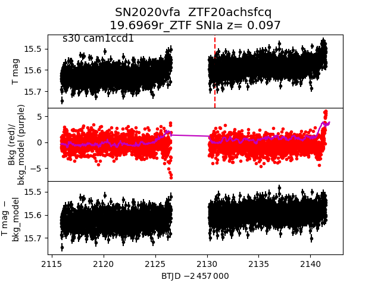
2020uwl
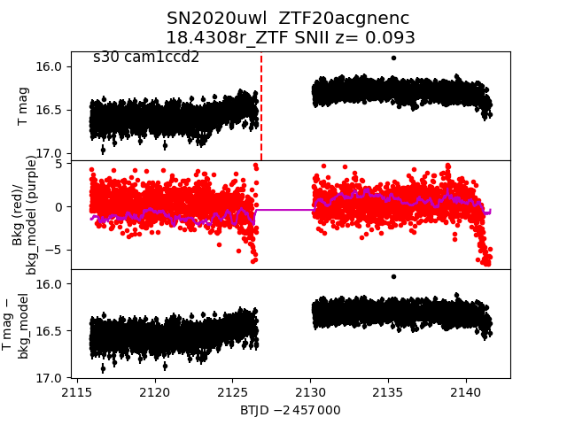
2020vcp
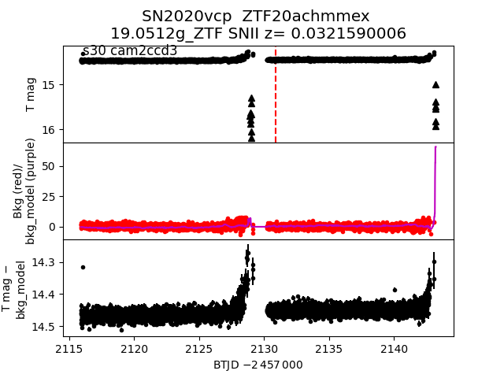
2020wpq
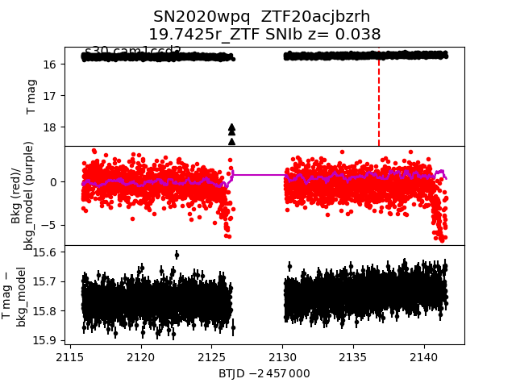
2020ypm
 2020wux
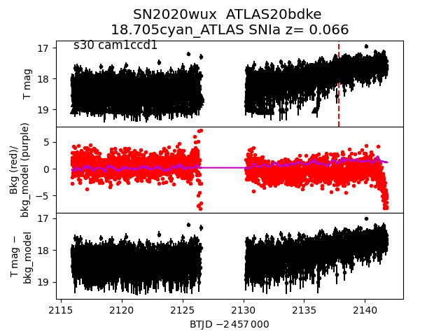
2020vem
2020wux
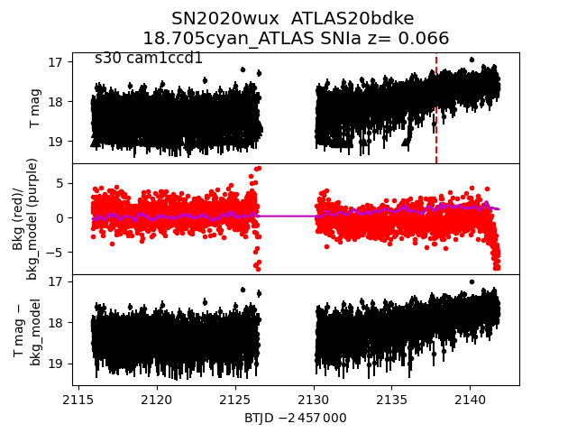
2020vem
 2020vgu
2020vgu
 2020uvg
2020uvg
 2020uzh
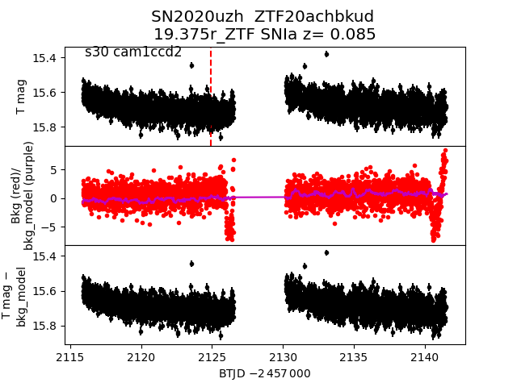
2020vea
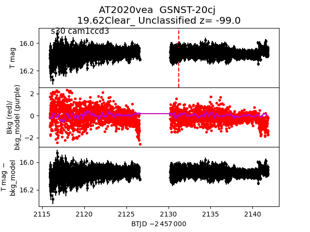
2020xjp
2020uzh
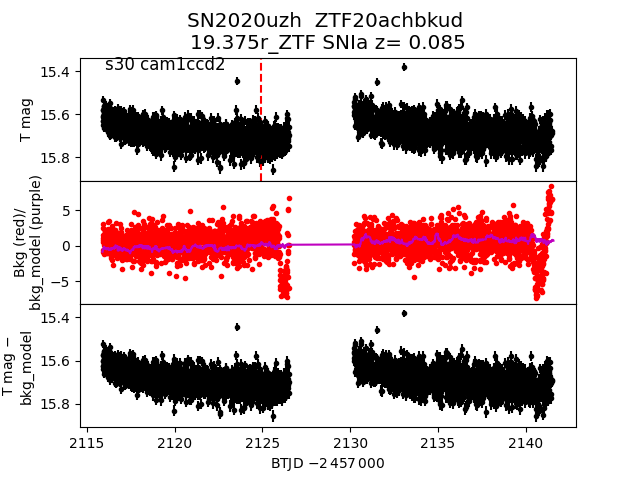
2020vea
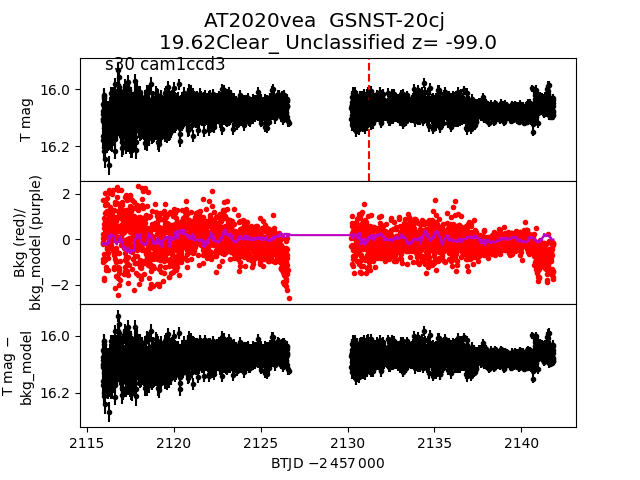
2020xjp
 2020ybf
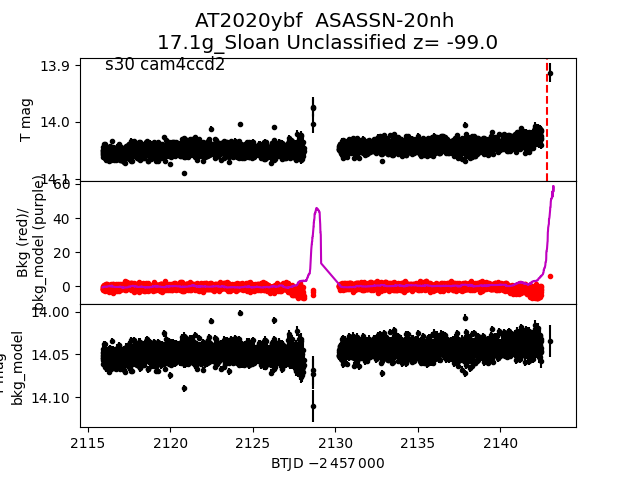
2020uzx
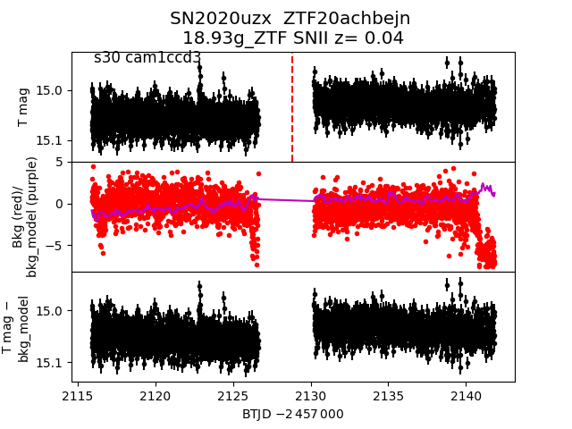
2020wuw
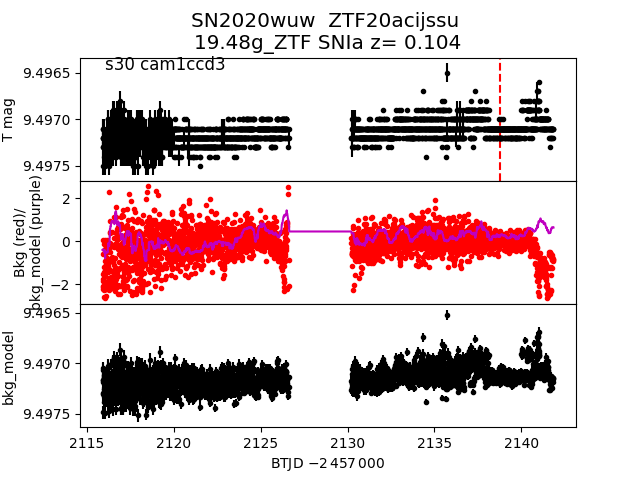
2020xpk
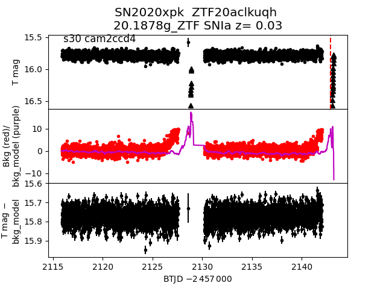
2020xsl
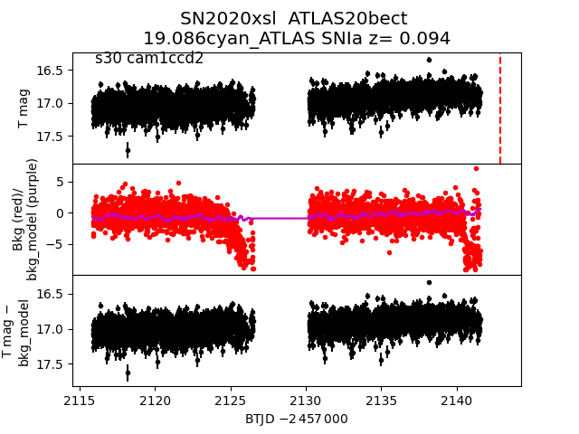
2020vdk
2020ybf
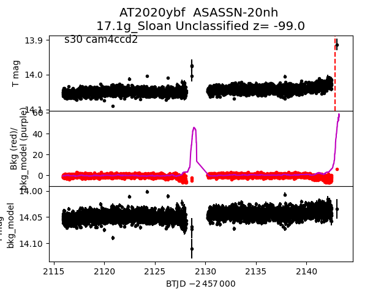
2020uzx
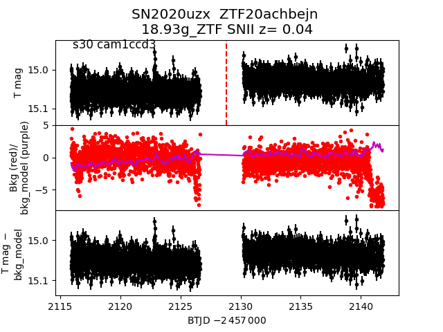
2020wuw
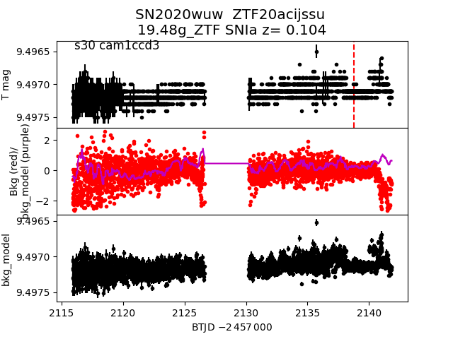
2020xpk
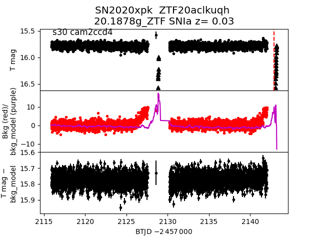
2020xsl
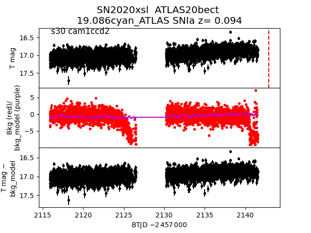
2020vdk
 2020xit
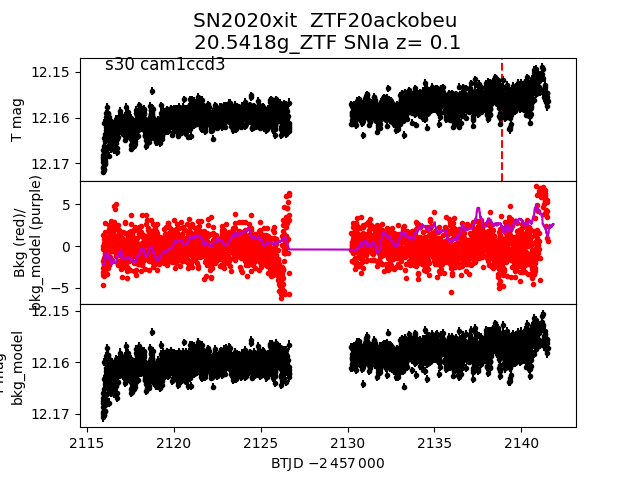
2020xit
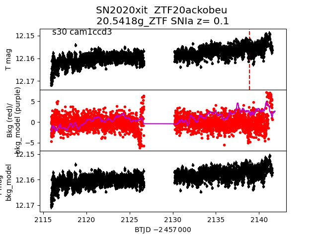